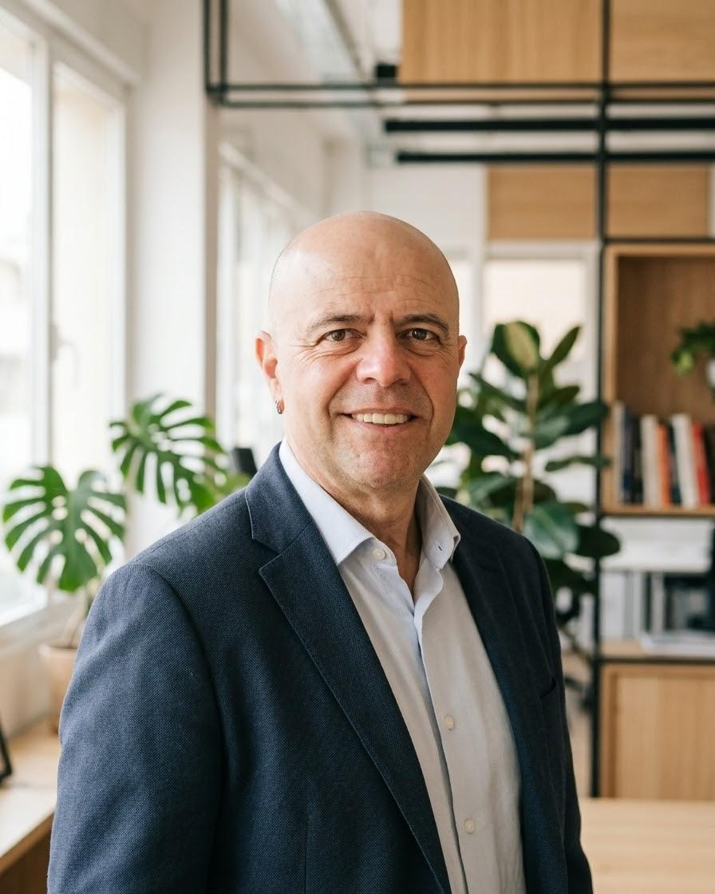
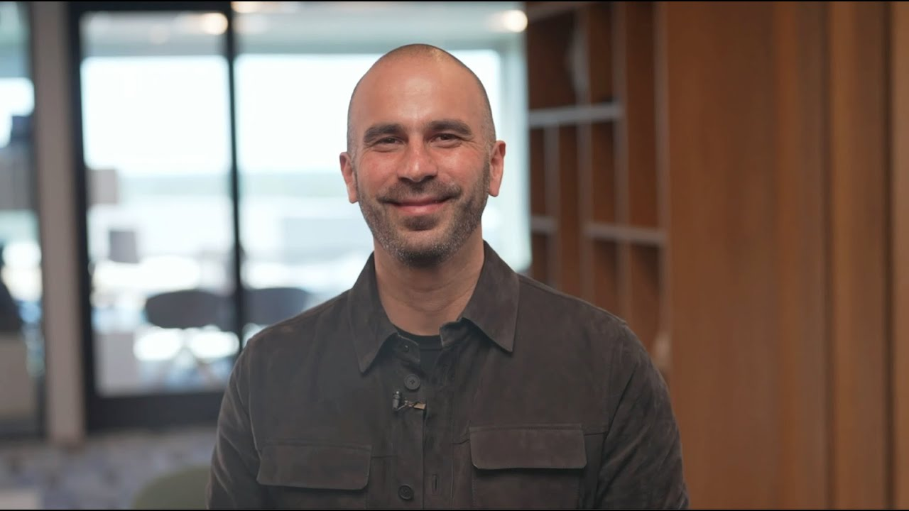
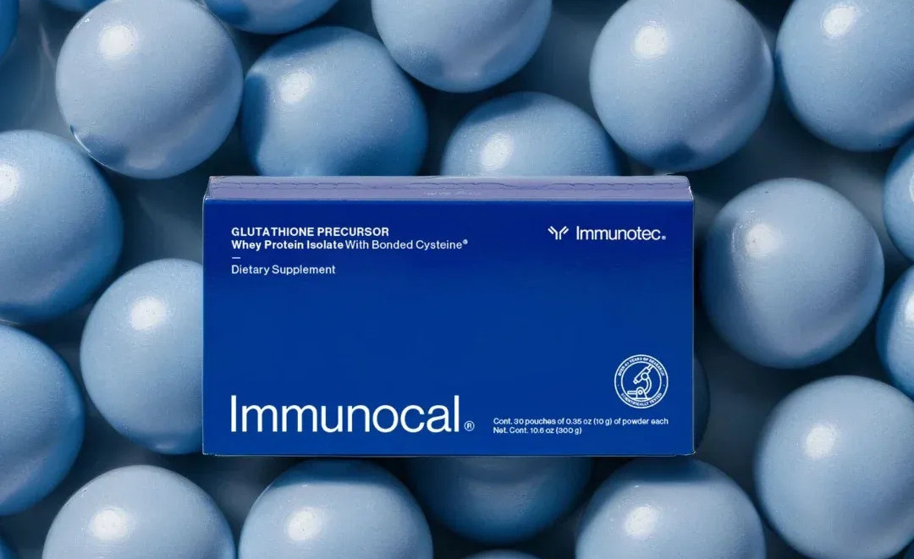
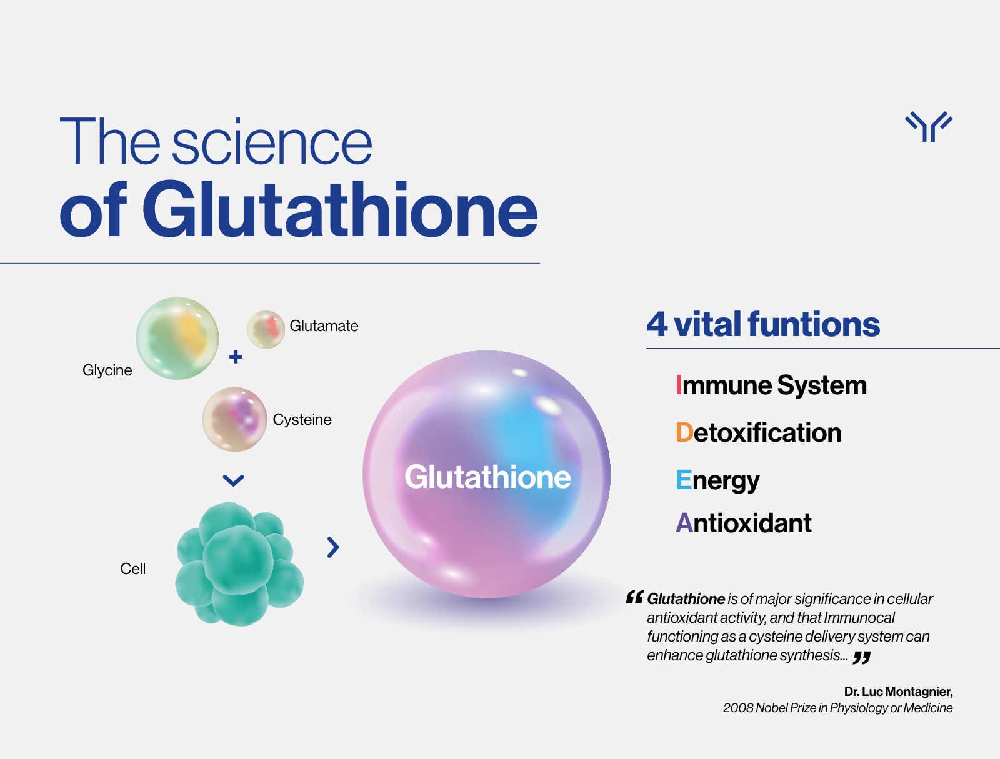

Tu primer paso con Immunotec es una conversación con Vasil VasilevYour first step with Immunotec is a conversation with Vasil VasilevПървата ти стъпка с Immunotec е разговор с Васил Василев
Si has llegado hasta aquí, es porque algo de Immunocal te ha llamado la atención. En pocos minutos vas a entender qué es, cómo se toma y cómo pedirlo. Te lo explica una persona real, sin presión y a tu ritmo. If you have made it here, it is because something about Immunocal caught your attention. In a few minutes you will understand what it is, how to take it and how to order it. A real person explains it, no pressure, at your own pace. Ако си стигнал дотук, нещо в Immunocal е привлякло вниманието ти. За няколко минути ще разбереш какво е, как се приема и как да го поръчаш. Това ще ти обясни реален човек — без натиск и в твоя ритъм.
Cómo funcionaHow it worksКак работи
Tu camino en tres pasosYour path in three stepsПътят ти в три стъпки
Conoce Immunocal y la oportunidad de negocioGet to know Immunocal and the business opportunityЗапознай се с Immunocal и бизнес възможността
Un suplemento alimenticio que marca la diferencia. Patentado y científicamente comprobado. Una oportunidad real de ingresos empresariales para crear la vida que deseas.A dietary supplement that makes a difference. Patented and scientifically proven. A real opportunity for entrepreneurial income to create the life you want.Хранителна добавка, която прави разлика. Патентована и научно доказана. Реална възможност за предприемачески доходи, за да създадеш живота, който искаш.
Habla con VasilTalk to VasilГовори с Васил
Cuéntale qué te interesa. Vasil Vasilev, Consultor Independiente de Immunotec, resuelve tus dudas y te indica cómo pedirlo. Una conversación abierta, de acuerdo a tus necesidades.Tell him what interests you. Vasil Vasilev, Independent Immunotec Consultant, answers your questions and shows you how to order it. An open conversation, based on your needs.Разкажи какво те интересува. Васил Василев, независим консултант на Immunotec, отговаря на въпросите ти и ти показва как да го поръчаш. Отворен разговор, според твоите нужди.
Tú decides cómo empezarYou decide how to startТи решаваш как да започнеш
Pides Immunocal como cliente o conoces cómo funciona el negocio. Cualquiera de los dos caminos empieza con tu mensaje a Vasil Vasilev.You order Immunocal as a customer or learn how the business works. Either path starts with your message to Vasil Vasilev.Поръчваш Immunocal като клиент или научаваш как работи бизнесът. И двата пътя започват със съобщение до Васил Василев.
La presentaciónThe presentationПрезентацията
Míralo en pocos minutosWatch it in a few minutesГледай го за няколко минути

Videopresentación de Mauricio Domenzain, CEO de Immunotec (en español). Toca la imagen para verla en YouTube.
El productoThe productПродуктът
Immunocal

Imagen del envase oficial de Immunocal (en inglés). Toca la imagen para verla en grande. Image of the official Immunocal container (in English). Tap the image to see it larger. Изображение на официалната опаковка на Immunocal (на английски). Докосни изображението, за да го видиш по-голямо.
Suplemento alimenticioDietary supplementХранителна добавка
Immunocal
Proteína de suero de leche aislada que se mezcla con agua, leche o zumo y forma parte de tu día a día. La proteína es un nutriente esencial: tu cuerpo la usa para construir y mantener la masa muscular. Isolated whey protein that mixes with water, milk or juice and becomes part of your daily routine. Protein is an essential nutrient: your body uses it to build and maintain muscle mass. Изолиран протеин от суроватка, който се смесва с вода, мляко или сок и става част от ежедневието ти. Протеинът е основно хранително вещество: тялото го използва, за да изгражда и поддържа мускулната маса.
- Aporta proteína de alta calidadProvides high-quality proteinОсигурява висококачествен протеин
- La proteína contribuye al aumento y a la conservación de la masa muscularProtein contributes to the growth and maintenance of muscle massПротеинът допринася за изграждането и поддържането на мускулна маса
- La proteína contribuye al mantenimiento de los huesos en condiciones normalesProtein contributes to the maintenance of normal bonesПротеинът допринася за поддържането на костите в нормално състояние
- Formato en polvo, fácil de incorporar a la rutinaPowder format, easy to fit into your routineФормат на прах, лесен за включване в ежедневието
La cienciaThe scienceНауката
La ciencia del glutatiónThe science of glutathioneНауката за глутатиона
Immunocal en cifras, según la presentación oficial de la compañía:Immunocal in numbers, according to the company's official presentation:Immunocal в цифри, според официалното представяне на компанията:
Pruebas y certificaciones de terceros: Informed Sport y Clean Label. Immunocal figura en los libros de referencia médica PDR (EE. UU.) y CPS (Canadá).Third-party testing and certifications: Informed Sport and Clean Label. Immunocal is listed in the PDR (U.S.) and CPS (Canada) medical reference books.Независими изпитвания и сертификации: Informed Sport и Clean Label. Immunocal е включен в медицинските справочници PDR (САЩ) и CPS (Канада).
Tu cuerpo produce glutatión a partir de tres aminoácidos: glicina, glutamato y cisteína. Immunocal aporta Cisteína Enlazada®, un precursor exclusivo que tu cuerpo utiliza para producir glutatión por sí mismo. Your body makes glutathione from three amino acids: glycine, glutamate and cysteine. Immunocal provides Bonded Cysteine® (Cisteína Enlazada®), an exclusive precursor your body uses to produce glutathione on its own.* Тялото ти произвежда глутатион от три аминокиселини: глицин, глутамат и цистеин. Immunocal осигурява Cisteína Enlazada® (свързан цистеин) — ексклузивен прекурсор, който тялото ти използва, за да произвежда сам глутатион.*

Imagen de la presentación oficial "Discover Immunotec" (en inglés). Toca la imagen para verla en grande. Image from Immunotec's official presentation "Discover Immunotec" (in English). Tap the image to see it larger. Изображение от официалното представяне на Immunotec „Discover Immunotec" (на английски). Докосни изображението, за да го видиш по-голямо.
"El glutatión es de gran importancia en la actividad antioxidante celular, e Immunocal funciona como un sistema de administración de cisteína que puede mejorar la síntesis de glutatión...""Glutathione is of great importance in cellular antioxidant activity, and Immunocal functions as a cysteine delivery system that can improve glutathione synthesis..."„Глутатионът е от голямо значение за клетъчната антиоксидантна активност, а Immunocal функционира като система за доставяне на цистеин, която може да подобри синтеза на глутатион..."
— Dr. Luc Montagnier, Premio Nobel de Fisiología o Medicina 2008. Cita incluida en la presentación oficial de Immunotec.— Dr. Luc Montagnier, Nobel Prize in Physiology or Medicine 2008. Quote included in Immunotec's official presentation.— Д-р Люк Монтание, Нобелова награда за физиология или медицина 2008. Цитат от официалното представяне на Immunotec.
El compromisoThe commitmentАнгажиментът
¿Por qué Vasil?Why Vasil?Защо Васил?
Vasil se desarrolla dentro de los ecosistemas corporativos multinacionales de Immunotec y de LifeWave. Conoció este negocio a través de contactos que hizo en sus viajes a América, mientras buscaba cómo potenciar el mercado español, y hoy uno de sus focos es abrir próximamente el mercado de Immunotec en Bulgaria. Vasil develops himself within the multinational corporate ecosystems of Immunotec and LifeWave. He was introduced to this business through contacts he made on his trips to America, while looking for ways to strengthen the Spanish market, and today one of his focuses is opening the Immunotec market in Bulgaria soon. Васил се развива в мултинационалните корпоративни екосистеми на Immunotec и LifeWave. Той се запозна с този бизнес чрез контакти, които направи по време на своите пътувания до Америка, докато търсеше как да укрепи испанския пазар, и днес един от фокусите му е скоро да отвори пазара на Immunotec в България.
Su compromiso con su equipo va más allá del negocio: atiende con dedicación las necesidades de cada persona y procura que tenga lo que necesita para desarrollarse, con formación continua y una mentalidad de aprendizaje constante. His commitment to his team goes beyond the business: he attends to each person's needs with dedication and makes sure they have what they need to grow, with continuous training and a constant-learning mindset. Ангажиментът му към екипа надхвърля бизнеса: отделя внимание на нуждите на всеки човек и се грижи той да разполага с това, от което се нуждае, за да се развива — с непрекъснато обучение и нагласа за постоянно развитие.
Y conoce de primera mano historias reales de su círculo: personas cercanas que le han contado, en primera persona, cómo Immunocal les acompaña en sus retos de salud y bienestar. Historias que le motivan a seguir compartiendo el producto con seriedad y responsabilidad. He also knows real stories from his circle first-hand: people close to him have told him how Immunocal supports them in their health and wellness challenges. Stories that motivate him to keep sharing the product seriously and responsibly. От обкръжението му излизат реални истории: близки хора са му разказвали как Immunocal ги придружава в предизвикателствата, свързани със здравето и благополучието им. Истории, които го мотивират да споделя продукта сериозно и отговорно.
El equipoThe teamЕкипът
Nuestro equipoOur teamНашият екип
Immunotec es empresa ejemplar en el sector con la mayor presencia de profesionales científicos como consultores independientes, y esto habla por sí solo. Detrás de este negocio hay más de: Immunotec is an exemplary company in the sector with the largest presence of scientific professionals as independent consultants, and that speaks for itself. Behind this business there are more than: Immunotec е образцова компания в сектора с най-голямо присъствие на научни професионалисти като независими консултанти, и това говори само за себе си. Зад този бизнес стоят повече от:
- 45 años de investigación científica45 years of scientific research45 години научни изследвания
- 25 años de ventas internacionales25 years of international sales25 години международни продажби
Debido a ello también se reconoce a Immunotec como una de las empresas con mayor crecimiento en Network Marketing en los últimos años. Por eso ofrecemos una oportunidad sólida de salud y bienestar y de éxito financiero. Because of this, Immunotec is also recognized as one of the fastest-growing companies in Network Marketing in recent years. That is why we offer a solid opportunity for health and wellness and financial success. Именно затова Immunotec се признава и за една от компаниите с най-бърз растеж в мрежовия маркетинг през последните години. Затова ние предлагаме солидна възможност за здраве, благополучие и финансов успех.
Estas mismas cualidades se reflejan en nuestro equipo de VasilevLegacy, con un background de mentores veteranos de Immunotec, casos de éxito y testimonios. These same qualities are reflected in our VasilevLegacy team, with a background of veteran Immunotec mentors, success cases and testimonials. Тези същи качества се отразяват в нашия екип на VasilevLegacy, с опит от ветерани ментори на Immunotec, успешни случаи и свидетелства.
Tú decidesYou decideТи решаваш
Tú decides cómo empezarYou decide how to startТи решаваш как да започнеш
Unirte a Immunotec como consultor independiente es empezar tu propio negocio con el respaldo de una compañía consolidada: formación gratuita, sitio web personal profesional y centro de negocios, descuento de consultor en todo el catálogo y el seguimiento cercano de un equipo internacional. Y el momento es ahora: el mercado español se fortalece y el mercado de Bulgaria se abrirá pronto. Joining Immunotec as an independent consultant means starting your own business backed by an established company: free training, a professional personal website and business center, consultant discount on the entire catalogue, and the close support of an international team. And the time is now: the Spanish market is growing stronger and the Bulgarian market will open soon. Да се присъединиш към Immunotec като независим консултант значи да започнеш собствен бизнес с подкрепата на утвърдена компания: безплатно обучение, професионален личен уебсайт и бизнес център, консултантска отстъпка за целия каталог и близкото съдействие на международен екип. И моментът е сега: испанският пазар се укрепва, а пазарът в България ще се отвори скоро.
Los dos caminos empiezan igual: con un mensaje a Vasil Vasilev. Elige el que va contigo.Both paths start the same way: with a message to Vasil Vasilev. Choose the one that fits you.И двата пътя започват по един и същ начин: със съобщение до Васил Василев. Избери този, който е за теб.
- Responde una persona, no un formularioA person answers, not a formОтговаря човек, не формуляр
- Hablar es gratis y sin compromisoTalking is free, with no commitmentДа поговориш е безплатно и без ангажимент
- Compras o te unes en el sitio oficial de la compañíaYou buy or join on the company's official siteКупуваш или се присъединяваш в официалния сайт на компанията
Quiero ser clienteI want to be a customerИскам да бъда клиент
Quiero ImmunocalI want ImmunocalИскам Immunocal
Lo compras en el sitio oficial de la compañía. Si te surge una duda, Vasil Vasilev te acompaña antes y después de tu pedido.You buy it on the company's official site. If a question comes up, Vasil Vasilev supports you before and after your order.Поръчваш го в официалния сайт на компанията. Ако възникне въпрос, Васил Василев те придружава преди и след поръчката.

Quiero conocer el negocioI want to learn about the businessИскам да науча за бизнеса
Quiero un negocio con ImmunotecI want a business with ImmunotecИскам бизнес с Immunotec
Compartes lo que usas y la compañía paga comisiones por las ventas que se hacen. Vasil Vasilev te explica qué se hace, qué cuesta entrar y qué dice la compañía. Lo que ocurra depende de tu actividad: no hay ingresos garantizados.You share what you use and the company pays commissions on the sales made. Vasil Vasilev explains what you do, what it costs to join and what the company says. What happens depends on your activity: there is no guaranteed income.Споделяш това, което използваш, и компанията плаща комисиони за направените продажби. Васил Василев ще ти обясни какво се прави, какво струва влизането и какво казва компанията. Какво ще се случи, зависи от твоята активност: няма гарантирани доходи.
- Seguimiento de progreso personal, paso a pasoPersonal, step-by-step progress follow-upЛично проследяване на прогреса, стъпка по стъпка
- Acceso gratuito a nuestras plataformas internas de formaciónFree access to our internal training platformsБезплатен достъп до нашите вътрешни платформи за обучение
- Sitio web personal profesional y centro de negociosA professional personal website and a business centerПрофесионален личен уебсайт и бизнес център
- Descuento de consultor en toda la gama de productos del catálogo de ImmunotecConsultant discount on the entire Immunotec product catalogueКонсултантска отстъпка за цялата гама продукти от каталога на Immunotec
Preguntas frecuentesFrequently asked questionsЧести въпроси
Antes de escribirBefore you writeПреди да напишеш
¿No es esto una pirámide?Isn't this a pyramid scheme?Не е ли това пирамида?
No. En una pirámide los ingresos vienen de reclutar sin producto real detrás. Aquí hay un producto físico que Immunotec vende a clientes desde hace más de 25 años y que figura en libros de referencia médica. Además, la compañía publica sus cifras oficiales: la mayoría de las personas ganan poco, y los ingresos dependen de ventas reales y de equipo. Te lo decimos abiertamente, con el enlace a la declaración de ingresos al final de esta página: estudia los números antes de decidir cualquier cosa.No. In a pyramid scheme, income comes from recruiting with no real product behind it. Here there is a physical product that Immunotec has sold to customers for more than 25 years, present in medical reference books. The company also publishes its official figures: most people earn little, and income depends on real sales and team activity. We say this openly, with the link to the income disclosure at the bottom of this page: study the numbers before deciding anything.Не. В пирамидална схема доходите идват от набиране на хора без реален продукт зад тях. Тук има физически продукт, който Immunotec продава на клиенти от повече от 25 години и който фигурира в медицински справочници. Компанията също публикува официалните си цифри: повечето хора печелят малко, а доходите зависят от реални продажби и екип. Казваме го открито, с връзка към декларацията за доходите в края на тази страница: проучи числата, преди да решиш каквото и да е.
¿Qué pasa con mis datos?What happens to my data?Какво става с моите данни?
Esta página no te pide datos. Si escribes por WhatsApp, Vasil verá tu número y lo que le cuentes, y lo usa solo para responderte. Puedes pedirle que lo borre cuando quieras.This page does not ask for your data. If you write on WhatsApp, Vasil will see your number and what you tell him, and he uses it only to reply. You can ask him to delete it whenever you want.Тази страница не иска данни. Ако пишеш през WhatsApp, Васил ще види номера ти и това, което разкажеш, и го използва само за да ти отговори. Можеш да го помолиш да го изтрие, когато искаш.
¿Cuánto tiempo hay que dedicarle?How much time does it take?Колко време е нужно?
Es un negocio real: el horario es flexible, pero el trabajo es constante. Cada persona lo adapta a su vida: Vasil te ayuda a planificar cuánto tiempo dedicarle según tus circunstancias y tus objetivos, y las herramientas de formación están disponibles cuando tú las necesites.It is a real business: the schedule is flexible, but the work is constant. Each person fits it around their life: Vasil helps you plan how much time to give it based on your circumstances and your goals, and the training tools are available whenever you need them.Това е истински бизнес: графикът е гъвкав, но работата е постоянна. Всеки го съобразява със живота си: Васил ще ти помогне да планираш колко време да отделяш според ситуацията и целите ти, а инструментите за обучение са на разположение, когато ти са нужни.
¿Cuánto se puede ganar?How much can you earn?Колко можеш да спечелиш?
Depende de las ventas que hagas y de la actividad de tu equipo: no hay ingresos fijos ni garantizados. Immunotec publica una declaración de ingresos oficial —puedes leerla en el enlace al final de esta página—, y la mayoría de las personas ganan poco al principio. Vasil te enseña los números reales, sin adornos, antes de que firmes nada.It depends on the sales you make and your team's activity: there is no fixed or guaranteed income. Immunotec publishes an official income disclosure —you can read it through the link at the bottom of this page—, and most people earn little at first. Vasil shows you the real numbers, no embellishment, before you sign anything.Зависи от продажбите, които направиш, и от активността на екипа ти: няма фиксиран или гарантиран доход. Immunotec публикува официална декларация за доходите —можеш да я прочетеш чрез връзката в края на тази страница—, и повечето хора в началото печелят малко. Васил ще ти покаже реалните числа, без украса, преди да подпишеш нещо.
Habla con Vasil VasilevTalk to Vasil VasilevГовори с Васил Василев
Cuéntale si quieres el producto o el negocio. Por WhatsApp te responde una persona, sin formularios y sin compromiso.Tell him whether you want the product or the business. On WhatsApp a person answers, no forms and no commitment.Разкажи му искаш ли продукта или бизнеса. През WhatsApp ти отговаря човек — без формуляри и без ангажимент.